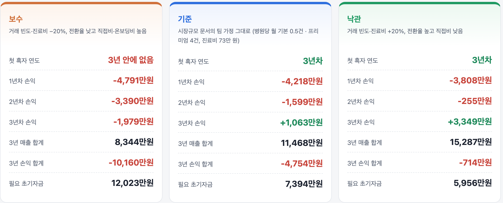

메디대구 — 대구 등록 병원과 외국인 환자를 잇는 AI 의료관광 플랫폼 · 최종 발표 12/4
피치 · 요금안 v4 · 등록 병원 161곳 확정
시장 규모 v2 · 수익 시뮬레이션 · 알림·번역·사후관리
요금 표기 통일 · VOC 4차 · 한방 진료과 · B2B 전략
"기능 같음 · 1건 73만 원"으로 BM 기준 고정 · 배포
피드백 반영 · 예약 규칙 · 대시보드 재구성
11/18 피치덱 7장 "12/4까지 우리가 할 것"과 피치 구조 점검표의 빈칸을 그대로 다시 봄
| 빈칸 (11/18) | 그때 | 지금 (11/27) | 상태 |
|---|---|---|---|
| MVP 주소 | 배포 전 — 로컬 시연만 | axa-tqse.vercel.app 배포 (가상 병원·가상 환자로 시연) | 채움 |
| 1건 진료비 | 100만 원 [추정] (1인 1년 153만 원을 보정) | 73만 원 = 대구 진료비 약 67억 ÷ 9,165명 (대구 카드 실측 기반, 3장) | 채움 |
| 시장 크기 | TAM·SAM·SOM 표 없음 · 경유율 10% [가정] | 원천 데이터로 재조사 → TAM·SAM·SOM v2 + 숫자 검증표 32건 | 채움 |
| 요금 기준 | 프리미엄 "AI 답장 초안·사후관리 포함" | 두 등급 기능 같음, 회원비·수수료율만 다름 · 프리미엄 연 ₩1,800,000 표기 | 채움 |
| 사람 테스트 | AI 평가만 통과 (12/12) | 팀 밖 3~5명 — 혼자 예약 요청까지 가는지, 걸린 시간 · 12/4 전 진행 예정 | 예정 |
기존 VOC에 거의 없던 상담 예약 단계와 다녀온 뒤 경험을 찾으려고 출처를 넓힘 — 틱톡("한국 피부과 예약" 검색) · Threads(대만·홍콩 경험담) · 페이스북(베트남)
11/18 — 유튜브·인스타·Dcard
3차 틱톡 댓글 1,077건 → 분류 138 (14차 검수)
4차 Threads 72 → 70 · 페이스북 744 → 9 (15차 검수)
Top 3 유지 — C-2 피부·성형 가격 기준 없음이 여전히 1위 (VOC 308건)
진흥원 2025 통계 + 2024 신용카드 보고서 원문으로 다시 계산 · 숫자마다 원문 표·쪽과 교차 확인을 남김 (검증표 32건)
11/18 v1(SAM 7,190명 · 1건 100만 원) → v2 · SOM 3년차 약 7,700–8,100만 원
| 외국인 환자 (2025) | 2,011,822명 | 진흥원 표 2.1 |
| − 주한미군·가족 (국내 거주) | 15,290명 | 표 3.25 |
| = TAM 환자 | 1,996,532명 | |
| × 1인 진료비 152.9만 원 | 약 3조 526억 원 | 카드 1조 4,052억 ÷ 919,104명 |
카드로 실제 결제된 것만 보면 1조 7,228억 원 (하한, KCTI 표 16)
병원은 결제된 진료에만 수수료 · 월 약 4.1건을 넘으면 병원에게 프리미엄이 유리 · 노출 순서는 팔지 않음
| 회원비 | 수수료 | 1건 (73만 원) | |
|---|---|---|---|
| 기본 | 무료 | 13% | ₩94,900 |
| 프리미엄 | 연 ₩1,800,000 | 8% | ₩58,400 |
수수료는 고시 상한(의원 30%) 안
1위 건당 진료비 · 2위 팀 인건비 · 3위 활발한 병원(월 4건) 수
요금은 그대로 두고 병원 수와 병원당 건수를 늘림 — 활발한 병원이 2배면 3년 이익 +4,875만 원 (5장)
기준 시나리오 3년차 손익분기 = 월 진료 완료 약 41건
팀 4명 × 주 4일 × 하루 4시간 = 월 345.1만 원 (2026 최저임금) · 과로를 전제로 숫자를 맞추지 않음 [가정]
전환율·마케팅비·입점 67곳은 실측 아님 · 세금·유치업 등록 자본금 1억 원 제외

| 보수 | 거래 빈도·진료비 −20%, 전환율 낮고 비용 높음 → 3년 안에 흑자 없음 |
| 기준 | 시장 규모 문서의 팀 가정 그대로 (기본 월 0.5건 · 프리미엄 4건 · 73만 원) → 3년차 흑자 |
| 낙관 | 거래 빈도·진료비 +20%, 전환율 높고 직접비 낮음 → 3년차 +3,349만 원 |
우리 수입 = 병원 수 × 병원당 건수 × 1건 73만 원 × 수수료율 → 움직일 수 있는 건 앞의 두 개
| 목표 | 지금 가정 | 이렇게 되면 | 3년 손익 |
|---|---|---|---|
| A. 입점 병원 수 | 3년차 말 67곳 [가정] | 병원 확보가 한 분기 빨라지면 | +806만 원 |
| B. 병원당 월 진료 | 기본 병원 월 0.5건 [가정] | 0.75건이 되면 | +2,451만 원 |
| 활발한 병원(월 4건) | 시뮬레이션 기준값 | 2배가 되면 (효과 가장 큼) | +4,875만 원 |
등록 기관 161곳에 병원 제안서 이메일 (성형·피부과부터) → 반응 온 병원부터 직접 방문
창립 파트너 첫 10곳 가입 조건 유지 · 첫 3개월 수수료 8% · 5개 언어 소개 등록 무료 대행
입점 병원에 추천 코드 → 추천한 병원: 프리미엄 1개월 연장 / 기본 3개월 8% · 추천받은 병원: 첫 3개월 8% · 대구 원장님 의사회·동문 관계 활용
혜택 예산 예시 약 315만 원 (신규 30곳 + 추천 성공 10건) → 병원당 건수 효과의 13%만 나와도 본전 [가정] · 프리미엄 전환은 목표가 아님 — 월 4건 넘는 병원에게만 권하는 도구
axa-tqse.vercel.app · 가상 병원 4곳·가상 환자로 시연 · 실제 병원은 정보 열람만
체류 형태 3문항 · 진료과·언어·지역 필터 · 6개 언어
진료시간 밖 · 중복 시간은 막음 · 동의 체크 후 제출
확정·거절·다른 시간 제안 · 답장 · 환자에게 알림
방문 후 채팅 · 번역(동의 시) · 사진·영상
새 기능을 늘리기보다, 시연 흐름 하나를 끝까지 매끄럽게
홈·상담예약·사후관리를 실제 DB 데이터로 · 예약 캘린더 · 오늘 일정
확정 예약 48·24·2시간 전 알림 · 기능은 만듦, 배포 설정 남음
161곳 홈페이지에서 직접 소통·통역 지원 확인 (지금은 예시 4곳만)
혼자 예약 요청까지 가는지 · 걸린 시간 · 막힌 곳
막힌 화면부터 고침
가상 병원 4곳 · 가상 환자로 시연 — 실제 병원에 예약이 전달되지 않아요 · 6개 언어 · AI 상담 미스터 권